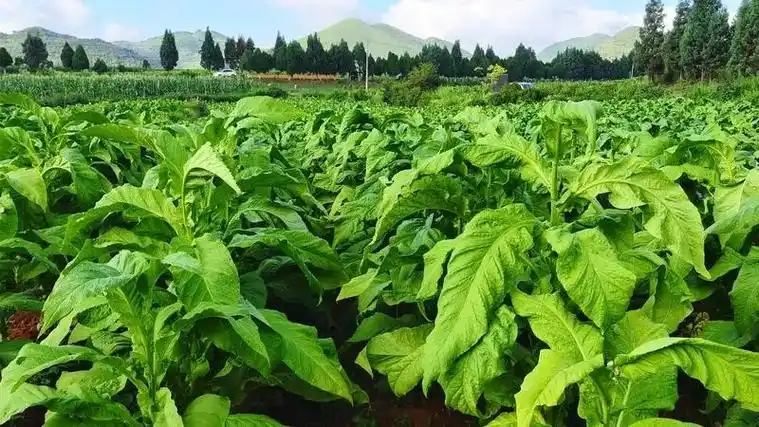
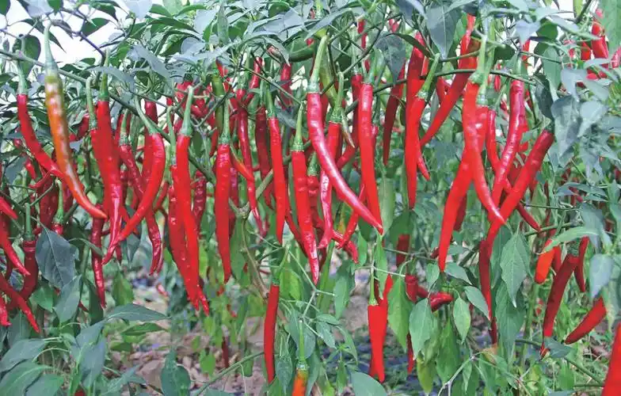
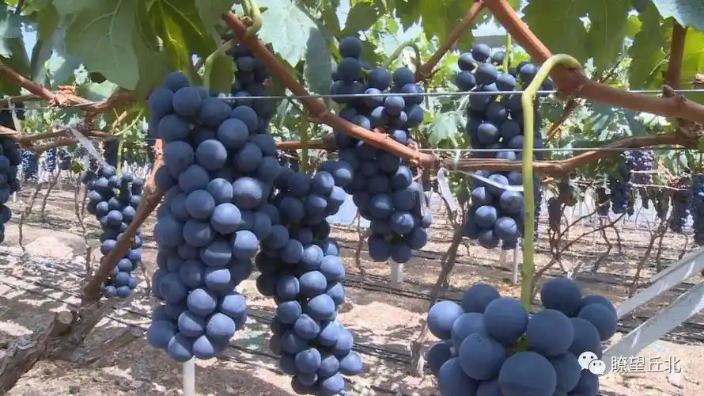
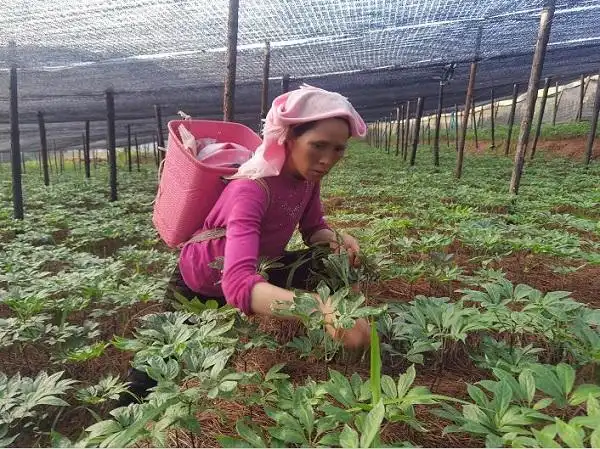

地形面积
位于东经103°34′～104°45′、北纬23°45′～24°28′之间，东西宽100公里，南北长70．5公里， 总面积4997平方公里，有山区、半山区、坝区和河谷槽区之分。地处滇东南岩溶丘陵地带，地势西南高，东北低， 六诏山支系大总山纵横全境。主要河流有南盘江、六郎洞河、夸墨河、拖底河、官寨河、补挡河、清水江、南丘河、 清水河、清平河、石葵河、盘龙河(马恒地段)，分属珠江流域西江水系和红河流域泸江水系。普者黑湖为较大的天然湖泊， 水面10.8平方公里。境内最高海拔(羊雄山顶峰)2501．8米，最低海拔(弄位村)782米。
土地资源
耕地承包面积58万亩，实有面积146万亩，其中500亩以上的坝子40个；林地总面积453.86万亩。 适宜种植粮食作物和烤烟、辣椒、莲藕、葡萄、薯蓣、三七等经济作物，并适于多个树种和野生菌的生长繁育，发展山地和林下经济潜力巨大。|

丘北树皮烤烟丰收
|

丘北辣椒
|
|

丘北曰者葡萄
|

丘北温浏乡三七种植地
|
矿产资源
已发现的有煤、铁、锰、铜、金、铅、锌、锑、汞、铝土矿、镓、磷、黄铁矿、 陶瓷土、滑石、硅石、石灰岩、砖瓦用页岩和普通建筑用砂共19种金属和非金属矿藏，矿点130多处；探明储量的矿种有锰矿、 煤矿、金矿、铁矿、汞矿、陶瓷土、铝土矿、铜矿、磷矿、石灰岩和砖瓦用页岩共11种，储量均较为丰富，其中铝土矿储量较多， 已探明铝土矿原矿量5515万吨,远景储量可达1.3亿吨，经省国土资源厅储量评审，达到国家级大型铝土矿床；六独铜矿储量1.35万吨以上， 平均品位为0.93%；陶瓷土（高岭土）资源储量达2.62亿吨以上，被誉为“西南第一瓷”；水米冲煤矿储量270万吨； 已发现的硅矿资源储量约500万吨以上，二氧化硅品位高达99%以上；塘房白云岩、石灰岩矿为大型矿，均具有良好的开发前景。
生物资源
适宜的气候及无污染的环境造就了多种类属动植物种类，主要的有数千种以上， 特别是野生动植物的种类繁多，林木有76科197种，药类650种，菌类17种；珍稀植物有银杏、董棕、野茶树、红椿、云南七叶树、 云南含笑、榉木、三尖杉、红花木莲、黑节草(石斛)、铁线莲、雪上一枝蒿等28种；珍稀动物有穿山甲、岩羊、锦鸡(箐鸡)、狐狸、眼镜王蛇等33种。
水资源
年平均降水量1183毫米，境内河流众多，湖泊、水库星罗棋布， 大小河流100多条，较大的有79条，有中型水库一座，小（一）型水库2座，小（二）型水库22座，小坝塘101个， 天然湖泊及小水塘133个；境内水系大部分属珠江流域、西江水系，南盘江为界河，清水江为主干河，年径流量24.474亿立方米， 又有从砚山注入南丘河3.5亿立方米的入境水量，共27.974亿立方米。除地表水外，还有较丰富的地下水资源， 著名的矣勒、水头、摆落、旧城四泉，均靠地下水补给；六郎洞地下河径流区约1020平方公里，总补给区约2280平方公里。
能源
丘北有风能资源约130万千瓦，太阳能光伏发电资源量约133万千瓦， 水能资源约28万千瓦。截至目前，丘北县电力装机容量共52.9万千瓦，水电装机14座17万千瓦；新能源装机容量36.1万千瓦， 其中：风电装机6座29.1万千瓦 ，太阳能装机2座7万千瓦。在建项目：锦屏西风电装机88万千瓦，红花山光伏15万千瓦，山心光伏3万千瓦， 整县屋顶分布式光伏12万千瓦以上。“十四五”丘北县新能源总规划225万千瓦，具备开发条件72万千瓦，需突破开发条件的67万千瓦， 不具备开发条件86万千瓦。同步开展抽水蓄能前期规划120万千瓦，争取纳入“十五五”规划。同时积极研究氢能产业发展中长期规划。
气候
由于地处低纬季风区域，气候总体上属中亚热带高原季风气候，有南亚热带、 中亚热带、北亚热带、南温带4个气候类型，四季温差小、干湿季分明、垂直差异显著，春温回升迅速，夏季温暖而不炎热， 秋季降温剧烈，冬季温和而不寒冷，终年温暖。年平均气温16.7℃，最冷月平均气温9.2℃，最热月平均气温21.９℃， 历年极端最低气温6℃，历年极端最高气温34.9℃。年平均降雨量1143.３毫米，光照充足，无霜期较长，年平均无霜期282天， 年雷暴日数79天。主要气候灾害有干旱、低温、洪涝、冰雹、大风、雷暴等。